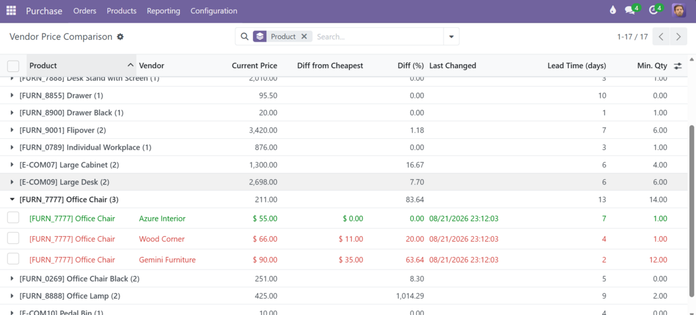
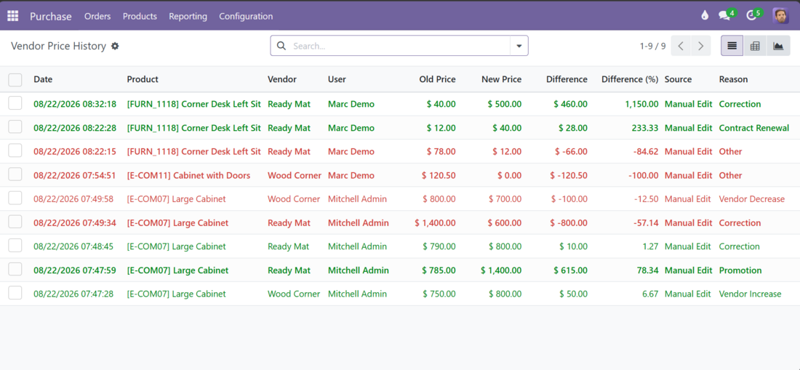
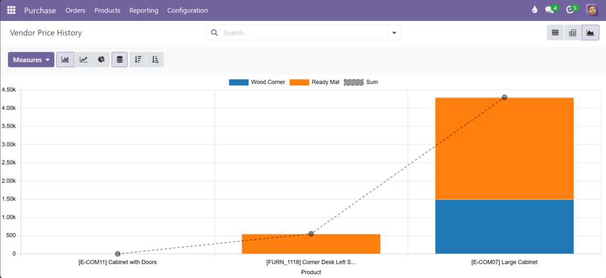
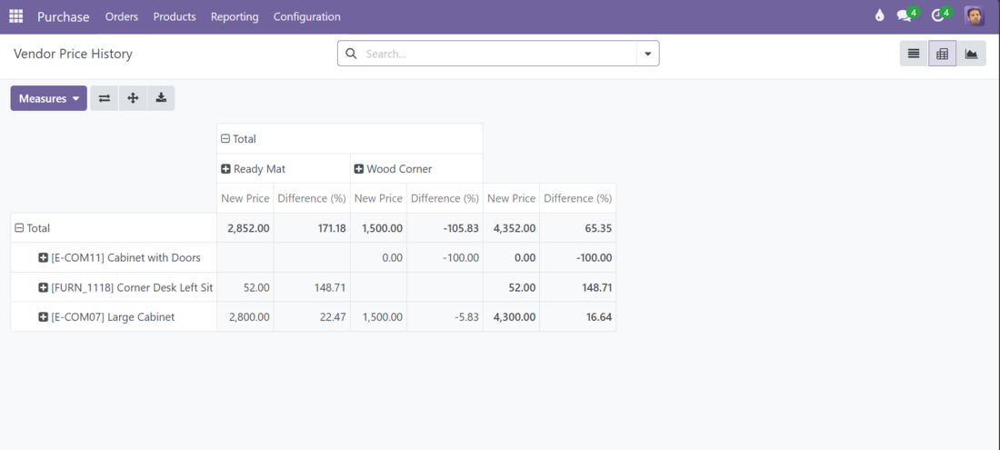
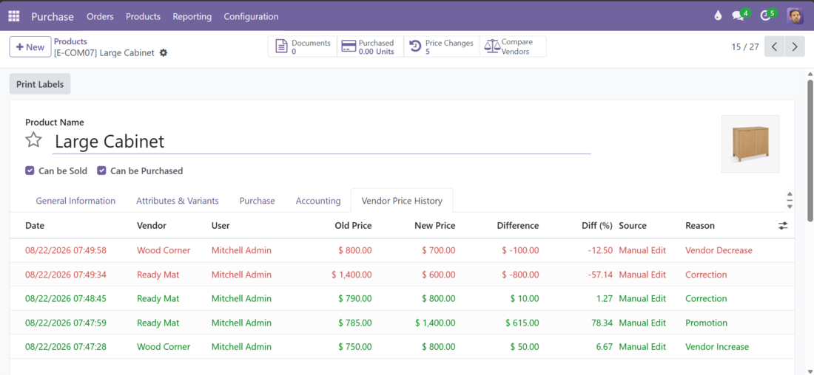
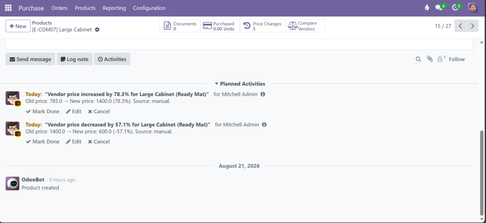

Old price, new price, % difference, who changed it, and when — automatically, on every edit.
See every vendor for a product side by side. The cheapest is highlighted — no more scanning rows by hand.
Price jumps past your configured threshold automatically create an activity for the responsible user.
Log why a price changed — negotiation, correction, vendor increase — right on the pricelist line.
The Vendor Price Comparison view groups every vendor pricelist line by product and highlights the cheapest one in green. Overpriced vendors (20%+ above the cheapest) are flagged in red, with the exact difference shown in currency and percent.

Nothing to configure. The moment a vendor price is edited — manually, from a purchase order, or via import — it's recorded here with the old price, new price, and the difference.

Graph view grouped by product and vendor, so you can compare price trends across your supply base at a glance — not one meaningless summed line.

Break down new price and percentage difference across every vendor and product combination, right from the standard pivot view.

Two smart buttons — Price Changes and Compare Vendors — plus a full history tab, without leaving the product you're already looking at.

Set your own alert threshold. Cross it, and the responsible user gets a scheduled activity with the old price, new price, and percentage change already filled in.

Odoo modules built and supported by ScopySoft.